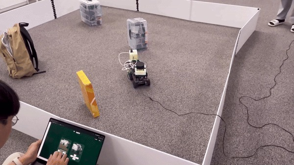
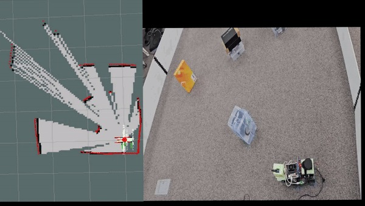
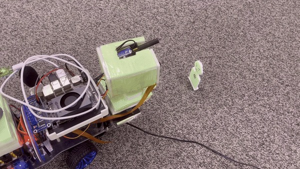
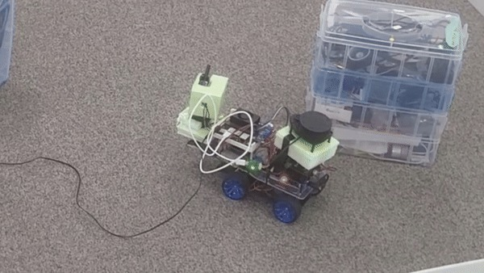
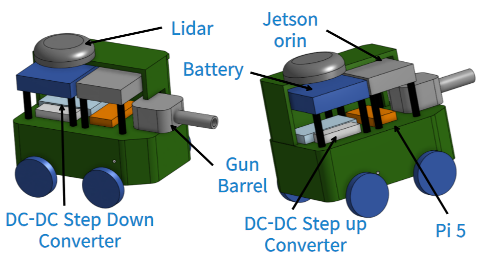

증상에서 출발
솔레노이드가 작동할 때 시스템이 종료되는 현상이 발생했습니다. SW 점검 후 분석 범위를 전원 계통으로 넓혔습니다.
PROJECT 02 / ROBOTICS / SYSTEM INTEGRATION
계측·제어 SW와 전원 구성을 함께 살펴, 로봇 구동과 원격 모니터링을 연결했습니다.
IN MOTION / 4 CLIPS
시연을 눌러 동작을 확인해 보세요.
선택한 영상만 한 번씩 재생됩니다.

DEMO / 6.1s원격 조작 화면과 로봇의 이동을 함께 보여주는 시연입니다. 저는 Raspberry Pi 계측·제어 SW와 MQTT 연동을 담당했습니다.

DEMO / 12.2sROS·LiDAR SLAM을 포함한 팀 시스템의 동작 기록입니다. SLAM 알고리즘 직접 개발 성과가 아닌, 로봇 시스템 연동 맥락으로 제시합니다.

DEMO / 5.9s조립한 기구와 전장 구성을 가까이에서 확인할 수 있습니다. 제 담당은 기구 제작·전원 구성과 구동기 제어입니다.

DEMO / 7.7s실제 로봇의 회전 동작을 보여줍니다. 주행 오차나 안정성 향상률을 측정한 자료는 아닙니다.
01 / CONTEXT
6인 팀으로 센서와 카메라, 이동 기능, 원격 모니터링·제어를 결합한 교육용 로봇을 제작했습니다. 저는 일정과 역할을 조율하고 기구 제작, 전원 구성, Raspberry Pi 계측·제어 SW를 담당했습니다.
02 / APPROACH
솔레노이드가 작동할 때 시스템이 종료되는 현상이 발생했습니다. SW 점검 후 분석 범위를 전원 계통으로 넓혔습니다.
DC-DC 컨버터의 표시 전압이 순간적으로 떨어지는 현상을 관찰했습니다. 별도 배터리와 DC-DC 컨버터를 사용해 전원을 분리했습니다.
센서 데이터 수집, 구동기 제어, MQTT 연동을 구현하고 반복시험으로 동작 안정화를 확인했습니다.
03 / VERIFICATION
로봇 구동과 원격 모니터링·제어 기능을 구현했습니다. 팀 프로젝트는 2024년 8월 16일 SSAFY 공통 프로젝트 우수상을 받았습니다.
04 / SCOPE
ROS와 LiDAR SLAM 기반 이동 기능은 팀 시스템의 일부이며, 제 역할은 계측·제어 SW와 시스템 연동입니다. 전압 변화는 DC-DC 컨버터 표시값으로 관찰했습니다.
PROJECT MATERIALS
제작 구성과 실제 결과를
프로젝트 자료로 살펴봅니다.

교육용 이동 로봇의 전체 구성도. 팀 시스템을 보여주는 자료이며, 제 담당은 기구·전원 구성과 Raspberry Pi 계측·제어, MQTT 연동입니다.
제공 포트폴리오 4쪽 수록 자료